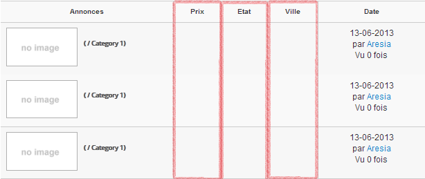

Here you can set custom columns to be displayed between the default columns 'Content' and 'Date' in the ad list pages.
The columns 'Content' and 'Date' are not editable, if you want to remove them, you must override the template, see Configuration .
You can assign which fields you want in these columns, you just have to drag and drop the chosen field in the chosen column.
There are three predefined columns when you install AdsManager: Price, Condition and City. Let's see their display in the administration section.
Check out the frontend, if you don't know how to access this view, check out "How to display ad lists" in the documentation.
As you can see you find your columns between your content and information about date, author and number of views.
If you don't need to create a new column but if you can edit one of the three columns if you want.
Columns are fully customizable. You can edit columns and
change their order of appearance. By default they apply
on all categories, you can change it by clicking on
the name of the column you want to change.
Creating new columns is the same procedure as editing existing ones.